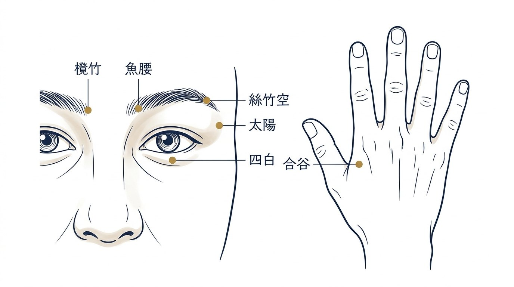

円錐角膜の鍼灸
角膜中央が薄く前方に突出する進行性疾患です。眼科での矯正・進行抑制治療を最優先に、眼精疲労や首肩の負担を補完的に整えます。


院長YouTube解説・関連動画
円錐角膜の主な症状は、角膜の変形による乱視や視力の低下
円錐角膜では、角膜が薄くなり、薄くなった部分が眼圧に耐え切れなくなり、前に突き出てきます。角膜が突き出てくると視力に影響が出ます。
初期の段階で現れる症状では、乱視が起こったと判断されることが多いため、ほとんどの場合は円錐角膜であると気が付きません。
さらに症状が進むと、角膜の突き出しが強くなります。すると、角膜の形が原因でコンタクトレンズをつけることが難しくなります。角膜の薄くなった部分とレンズが擦れることが原因で激しい痛みが起こることもあります。
円錐角膜を放っておくと、角膜の薄くなった部分が破れてしまいます。最悪の場合、失明する危険もあります。
円錐角膜の主な症状は、角膜の変形による乱視や視力の低下です。視力が下がったり乱視になっても、病気が進むと眼鏡での矯正ができなくなります。
角膜の突き出しが強くなると、角膜の中にあるデスメ膜が破裂することもあります。デスメ膜が破裂してしまうと、角膜の中に水がたまり、角膜が突然白く濁る急性水腫を引き起こしてしまいます。急性水腫を起こしてしまうと、視力が急激に低下します。
円錐角膜は、角膜が徐々に薄くなり、突き出して円錐形状になる眼の病気です。この変形は、光が正常に網膜上に焦点を結ぶのを妨げ、多くの視覚の問題を引き起こします。
乱視: 角膜の変形により、光が網膜上に正確に焦点を合わせられなくなるため、乱視の症状が現れます。乱視は、物がぼやけて見える、または歪んで見えるという症状を引き起こします。
視力低下: 初期段階では軽度の視力低下から始まり、病気が進行するにつれて徐々に視力が低下します。最終的には、強度な眼鏡やコンタクトレンズを使っても、適切な視力を得ることが難しくなることがあります。
夜間の視覚問題: 夜や暗い場所では、視覚の問題が特に顕著になることがあります。これには、ハローやグレア（眩しい光）といった症状が含まれます。
急激な視力の変化: 病気の進行とともに、短期間での視力の急激な変化や眼鏡の度数の変化が頻繁に必要となることがあります。
眼の不快感: 一部では、目のかゆみ、乾燥、刺激感を感じることがあります。
光過敏: 強い光や反射に対して過敏になることがあり、日常生活での不便や不快感を感じることがあります。
円錐角膜の症状は、角膜の変形によって引き起こされます。正常な角膜は、入射する光を適切に屈折させ、網膜上に鮮明な像を作成します。しかし、円錐角膜では、角膜の薄化と突き出しにより、光の屈折が不均一となり、像の乱れやぼやけを引き起こします。
また、角膜の不均一な薄化は、光の散乱を引き起こすため、夜間の視覚の問題や光過敏の原因となります。
円錐角膜の初期段階では、症状は軽度であるか、または全く気付かないことが多いです。多くの場合、定期的に眼科に行くことや視力の変化が原因で初めて病気が検出されます。病気が進行するにつれて、視力の低下やその他の症状が徐々に増加し、日常生活に影響を及ぼすようになります。
円錐角膜は、角膜の変形と関連する一連の視覚の問題を引き起こす病気です。症状は病気の進行とともに増加し、生活の質を著しく低下させる可能性があります。
円錐角膜は、ハードコンタクトレンズで改善することができます。非常に進んでしまった状態の円錐角膜ではコンタクトレンスでの改善は難しいですが、ほとんど場合はコンタクトレンズによる改善を行います。
円錐に突き出した角膜に対してフラットなカーブのハードコンタクトレンズを乗せることで物理的に前に突き出ることを防ぐ効果があります。ハードコンタクトレンズを使うことで眼鏡では矯正が難しい視力の矯正も可能です。
円錐角膜の症状が進んだ場合、突き出した角膜にコンタクトレンズが乗らず落ちてしまうことや、突き出した部分とコンタクトレンズが擦れることによって起こる痛みによって、コンタクトレンズをつけることが難しいことがあります。
コンタクトレンズを使うことが難しい場合、円錐角膜専用の特殊なレンズを使用すしたり、角膜とハードコンタクトレンズの間にソフトコンタクトレンズを乗せるピギーバック法でコンタクトレンズを使ったりします。
最近では、薬と紫外線を使って角膜のコラーゲンを強くする角膜クロスリンキングという方法や角膜内リング挿入術などの新しい改善方法もあります。
円錐角膜は、角膜が徐々に薄くなり、中央部が突き出して円錐形になる病態を指します。この病気に対する改善法は、症状の重さや病気の進行度によって異なります。以下は、円錐角膜の主な改善法に関する詳細な情報です。
眼鏡やコンタクトレンズ: 初期段階の円錐角膜では、眼鏡やソフトコンタクトレンズで視力を補正することが多い。しかし、病気が進行すると、特殊な硬質コンタクトレンズが必要になることが多い。硬質コンタクトレンズは、角膜の突き出し部分を覆い、平滑な前面を作ることで、光の屈折異常を補正します。
角膜クロスリンキング (CXL): これは、角膜の薄化や進行を停止または遅らせる手術方法です。この手術では、リボフラビン（ビタミンB2）の眼点滴と紫外線の照射を組み合わせて、角膜のコラーゲン繊維を強化し、さらなる薄化や変形を防ぐことを目的としています。
角膜移植: 病気が進行して角膜クロスリンキングや特殊なコンタクトレンズでの改善が効果的でない場合、角膜移植が検討されることがあります。移植手術には、ペネトレーティングケラトプラスチー（PKP）や深層前方角膜移植（DALK）といった方法があります。
角膜リングセグメント挿入: この手術では、小さなプラスチック製のリングを角膜の深部に挿入することで、角膜の形状を正常化し、視力を改善することを目指しています。
トポグラフィーガイドされた表層照射法: この手術では、エキシマレーザーを使用して角膜の表層を再形成することで、視力を改善することを目的としています。これは、特定の症例において効果的であることが示されています。
薬: 炎症や眼の不快感を和らげるための薬や、角膜の腫れを減少させるための塩化ナトリウム点眼液など、症状を軽減するための薬が考慮されることがあります。
低強度レーザー: 一部の症例で、低強度のレーザーが角膜の硬化や形状の正常化に効果的であることが示されています。
円錐角膜は、進行性の病気であり、改善方法は症状の重さや病気の進行度に応じて選択されます。初期段階では非外科的な改善方法が効果的であることが多いが、病気が進行すると外科的な改善方法が必要になることがあります。
円錐角膜の改善には、主に外科的な改善方法が中心ですが、一部の症状の管理や角膜の状態を安定させるための薬も用いられることがあります。以下に、円錐角膜の改善に使用される可能性のある薬物とその目的、効果について説明します。
塩化ナトリウム点眼液や軟膏
目的: 角膜の浮腫を減少させるため。
効果: 角膜の細胞間の液体を吸収し、角膜の浮腫を軽減する。これにより、一時的な視力の改善や不快感の軽減が期待できる。
非ステロイド性抗炎症薬 (NSAIDs) 点眼液
目的: 炎症や眼の痛みを和らげるため。
効果: 炎症を抑制し、眼の赤みや痛み、不快感を軽減する。
ステロイド点眼液
目的: 重度の炎症を抑制するため。
効果: 炎症反応を強力に抑制することができる。しかし、長期間の使用は副作用のリスクがあるため、使用は慎重に行われる。
人工涙液
目的: 乾燥や刺激感を緩和するため。
効果: 眼の表面を保護し、適切な涙の層を維持することで、乾燥や不快感を軽減する。
抗生物質点眼液
目的: 角膜の傷や手術後の感染リスクを低減するため。
効果: 眼の感染を予防し、存在する細菌を除去する。
以上の薬物は、症状や状態に応じて使用されます。眼科医の指示に従って、適切な用量と使用方法で使用することが重要です。
円錐角膜では、コンタクトレンズを使用して経過観察をする方法が一般的な改善方法です。しかし、コンタクトレンズを使用する目的は、円錐角膜が進行することによって起こる視力の低下や乱視が起きることへの対応をすることです。
コンタクトレンズでは、下がった視力や乱視を軽くすることはできますが、病気が進んでいる場合は根本的に改善をして病気の進行を止める必要があります。
コンタクトレンズでの改善は、根本的な改善方法ではありません。円錐角膜が進むと、角膜どんどん薄くなり手遅れになった場合は角膜移植が必要です。
円錐角膜は、最も角膜移植が必要となる目の病気です。病気が進行するのを防ぐためにも適切な改善方法を行うことが大事です。
▼ 詳しく知りたい項目だけタップして開けます（全項目の医学解説を収録）
01. 原因とメカニズム
なぜ症状が起きるのか・鍼灸の作用機序を読む
▼
01. 原因とメカニズム
なぜ症状が起きるのか・鍼灸の作用機序を読む
黒目（角膜）の中央部分が徐々に薄くなり、円錐状に前方へ突出していく進行性の眼疾患です。多くは思春期から青年期に両眼で発症し、40代頃まで進行します。明確な原因は未解明ですが、角膜コラーゲン構造の異常や遺伝的要因に加え、アトピー性皮膚炎やアレルギーに伴う「目を強くこする習慣」が大きく関与するとされています。眼科での特殊ハードコンタクト矯正や角膜クロスリンキング、重症例での角膜移植など専門管理が不可欠です。
なぜ鍼灸で改善へ向かうのか？（作用機序の図解）
円錐角膜に対する鍼灸は、後頸部〜眼周囲の微小循環と毛様体筋・自律神経調整機序を通じて、お体本来の回復力を引き出します。
眼球周囲の危険な深刺しを避け、風池・天柱・合谷・太衝など安全な経穴へ繊細に施術します。
PC・スマホ作業や緊張で固まった首深層筋と眼輪筋周囲の血流を促し、重だるさを軽減します。
交感神経優位による目の乾き・ピント調節疲労を鎮め、涙液分泌とリラックス反応を助けます。
眼科の点眼・定期検査を最優先としつつ、日々の眼精疲労や頭痛・肩こりの連鎖を整えます。
02. よくあるお悩み
このような症状はありませんか？（4項目）
▼
02. よくあるお悩み
このような症状はありませんか？（4項目）
- ✓視界がぼやけたり歪んだりして見えにくい
- ✓眼鏡やコンタクトの度数が頻繁に合わなくなる
- ✓夜間の光のにじみ（ハロー・グレア）やまぶしさがある
- ✓見えにくさやレンズ装用による眼精疲労・首肩こりがつらい
03. 当院の施術アプローチ
施術の進め方・改善のポイントを見る
▼
03. 当院の施術アプローチ
施術の進め方・改善のポイントを見る
04. ツボ詳細・セルフケア一覧
ドライアイ・眼精疲労・まぶたのツボ図解（6穴）
▼
04. ツボ詳細・セルフケア一覧
ドライアイ・眼精疲労・まぶたのツボ図解（6穴）
実際の施術ではお一人おひとりの体質・症状に合わせて選穴しますが、ドライアイ・眼精疲労・VDT症候群・眼瞼下垂/けいれんのケアの臨床でよく用いられる代表的なツボの目安です。
| ツボ名 | 位置の目安 | 主な狙い | セルフケアの注意点 |
|---|---|---|---|
| 攅竹（さんちく） | 眉頭の内側のくぼみ | まぶたの重だるさ・涙液分泌の副交感神経サポート | 眼球を押さず眉骨の縁に向かって優しく押します。 |
| 魚腰（ぎょよう） | 眉毛のちょうど真ん中、黒目の真上 | 眼瞼下垂・眼瞼けいれん・まぶたの疲労緩和 | 目を閉じて軽く3秒ほど当てて離します。 |
| 絲竹空（しちくくう） | 眉尻の外側のくぼみ | 目の奥の痛み・側頭部の張り・かすみ目ケア | コンタクトレンズは外した状態でケアすると安全です。 |
| 太陽（たいよう） | こめかみのくぼみ | デスクワーク後の目の疲れ・こめかみ痛の緩和 | 蒸しタオルで目元を温めたあとに行うと効果的です。 |
| 四白（しはく） | 黒目の真下、頬骨の小さなくぼみ | 下まぶたのけいれん・眼窩下部の循環改善 | 皮膚を強くこすらず垂直に軽く触れます。 |
| 合谷（ごうこく） | 手の甲、親指と人差し指の間 | 頭顔面・目の緊張を和らげる全身調整穴 | 仕事中の合間にも手軽に押せるツボです。 |
05. 医学的根拠・国際査読論文（PubMed / Cochrane）
科学的エビデンス・出典リンク一覧（4件）
▼
05. 医学的根拠・国際査読論文（PubMed / Cochrane）
科学的エビデンス・出典リンク一覧（4件）
国際的な医学データベース（PubMed・Cochrane等）で報告されているドライアイ・眼精疲労・VDT症候群・眼瞼下垂/けいれんのケア領域の代表的な査読済み鍼灸研究をまとめています（標準治療との併用や研究上の限界を含めて正確に掲載）。
| 年・研究デザイン | 対象・規模 | 主な結果 | 限界・出典 |
|---|---|---|---|
| 2024年 メタ解析 | ドライアイ 16試験（n=1,383：人工涙液併用） | BUT（SMD 1.25, P<0.0001）、シルマー試験（SMD 1.55, P<0.0001）、角膜染色・総有効率（OR 4.09）が有意改善。 | 自覚症状OSDIは有意差なし（P=0.15）。人工涙液との併用評価。 Medicine (PMID: 38181299) |
| 2019年 二重盲検RCT | ドライアイ 49名（米国・6か月追跡） | 実鍼群はOSDIスコアが1週〜6か月まで有意改善（6か月p<0.01）、乾燥感・充血も有意軽減。 | 小規模・客観的涙液指標（TBUT等）は有意差なし。 Clin Ophthalmol (PMID: 31114151) |
| 2020年 Cochraneレビュー | 緑内障・高眼圧症 3 RCTs（n=137） | 一時的な眼圧低下の報告はあるが8週時点で差消失、視力は有意差なし。 | 全試験が高バイアス・確実性非常に低。点眼治療の代替不可。 Cochrane (PMID: 32032457) |
| 2025年 メタ解析 | 変性眼疾患 21研究（緑内障・黄斑変性等） | 総有効率はOR 3.52（p<0.00001）だが、統合視力（p=0.50）・眼圧（p=0.11）に有意差なし。 | 非ランダム化研究含む。眼科標準管理下での補完研究段階。 Complement Ther Med (PMID: 40850524) |
参考文献・出典
- 2024年 メタ解析（ドライアイ 16試験（n=1,383：人工涙液併用））— Medicine (PMID: 38181299)
- 2019年 二重盲検RCT（ドライアイ 49名（米国・6か月追跡））— Clin Ophthalmol (PMID: 31114151)
- 2020年 Cochraneレビュー（緑内障・高眼圧症 3 RCTs（n=137））— Cochrane (PMID: 32032457)
- 2025年 メタ解析（変性眼疾患 21研究（緑内障・黄斑変性等））— Complement Ther Med (PMID: 40850524)
06. よくある質問（FAQ）
よくあるご質問を見る（2件）
▼
06. よくある質問（FAQ）
よくあるご質問を見る（2件）
Q. 鍼灸で角膜の突出を元に戻せますか？
角膜の形状変化を鍼灸で元に戻すことはできません。眼科での矯正・進行抑制治療を最優先とし、見えにくさに伴う眼精疲労や首肩の緊張緩和を目的とした補完ケアとしてご利用ください。
Q. 日常生活で最も気をつけることは何ですか？
角膜への機械的刺激が進行を早めるため、かゆみがあっても目をこすらず、アレルギー症状は眼科で適切に管理することが大切です。
あわせて読まれる関連疾患（眼のお悩み）
黄斑部に血漿成分が漏れ出し嚢胞状のむくみが生じる病気です。眼科での標準治療を最優先に、安定期の疲労・体調を支えます。
白目やまぶた裏の粘膜が炎症を起こす病気です。感染性は眼科受診を最優先に、アレルギー性の体質・免疫バランスを整えます。
片眼の外傷や手術後に健常眼にも自己免疫性炎症が生じる重篤疾患です。眼科治療最優先で安定期の補完ケアを支えます。
角膜にアミロイドが沈着し強いまぶしさや異物感が生じる指定難病です。眼科治療最優先で安定期の疲労や首肩こりを支えます。
遺伝性に黄斑部の視機能が低下する指定難病の総称です。眼科専門医での管理を最優先に、安定期の眼精疲労や首肩こりをケアします。
片眼に発作的な眼圧上昇と軽度の炎症を繰り返す続発緑内障です。発作時は眼科治療が必須で、寛解期の体調管理を支えます。
CLINICAL RECOVERY CASES
✨ 実際の臨床改善事例・回復経過を見る
銀座本院をはじめ各院での実際の改善事例を症状別に絞り込んでご確認いただけます。
おひとりで悩まず、まずはご相談ください
銀座本院・川口・大宮・横浜・博多・田無の各院でご予約を承っております。